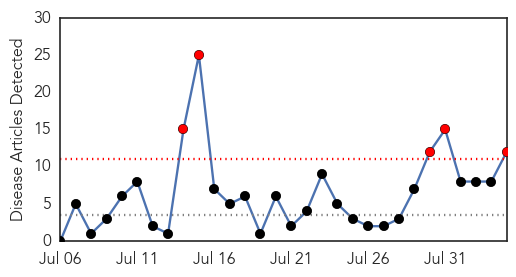
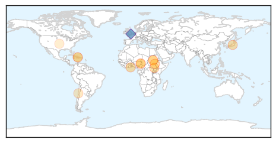
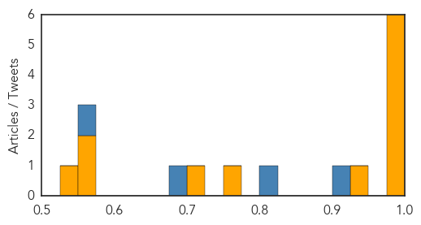

Dengue Fever
30-Day Web Trend
1 alerts, 2 warnings

30-Day Twitter Trend
5 alerts, 0 warnings

Article Locations

Article Confidences

Top Articles:
- 0.984
- Dengue fever spreads northward, confirmed cases this year at 412
- 0.903
- Dengue larvae breeds in every 4th house surveyed
- 0.889
- Three areas in Lahad Datu declared dengue free – BorneoPost Online
- 0.820
- Stop bickering, start pushing scientific frontiers against dengue – Wan Izzuddin Sulaiman
- 0.581
- New dengue vaccine not effective enough for Singapore: Vivian Balakrishnan, Health News & Top Stories
Top Tweets:
- 0.951
- RT: Em pleno 2014 e a humanidade ainda sofre com surtos de Dengue Ebola e Malaria. Lamentável
Cholera
30-Day Web Trend
5 alerts, 0 warnings

30-Day Twitter Trend
5 alerts, 0 warnings
Article Locations
Article Confidences
Top Articles:
- 0.998
- Imminent cholera outbreak in Accra; hospitals not ready
- 0.996
- Riverboats Offer Lifeline to Cholera Victims in South Sudan
- 0.996
- Riverboats Offer Lifeline to Cholera Victims in South Sudan
- 0.996
- Riverboats Offer Lifeline to Cholera Victims in South Sudan
- 0.993
- Emergency Plan of Action (EPoA) Cameroon: Cholera, Operation n° MDRCM018 - Cameroon
- 0.979
- Local communities bring new hope for Haiti
- 0.932
- Thousands of cholera cases reported in South Sudan
- 0.760
- Cholera outbreak kills 10 in Nigeria's Borno State
- 0.716
- The Charitable Efforts of AmeriCares
- 0.574
- Cholera in South Sudan Situation Report # 77 as at 23:59 Hours, 2 August 2014 - South Sudan
- 0.551
- Ghana must shift from ‘Kleptocracy’ to Technocracy in our Governance – Prof. Alex Dodoo
- 0.534
- 08 Relief organizations need to think long-term, UF research shows University of Florida
Top Tweets:
- 0.923
- RT: Cholera outbreak: Refugees flee camp in Borno: Following the cholera and Malaria outbreak at the Internally... http://…
- 0.817
- RT: Cholera. Ebola. Hepatitis B. Malaria. HIV/AIDS. I can't even risk buying food outside anymore
- 0.692
- RT: I also don't understand why people keep comparing Ebola to malaria and cholera that they kill more people so we should focus …
- 0.573
- RT: I've survived cholera multiple malaria attacks dysentery hookworm Apollo whopping cough mumps chicken pox and typhoid f…